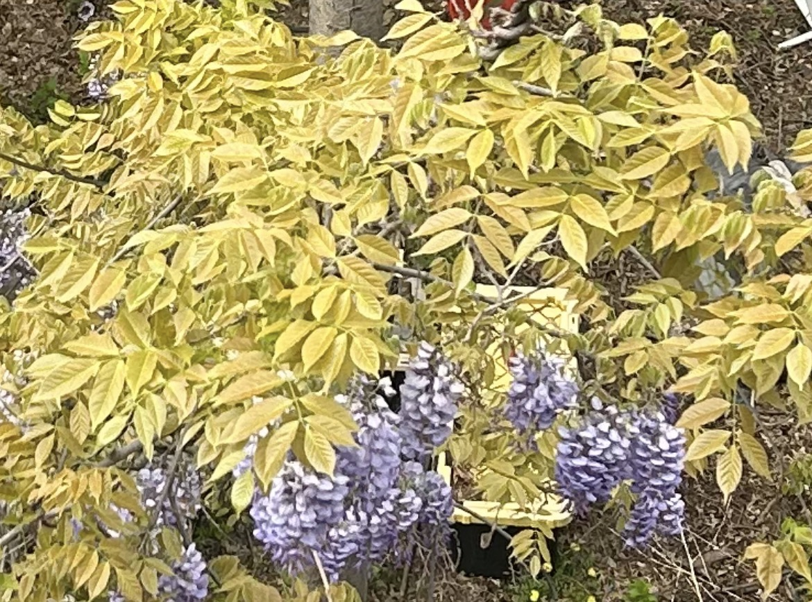

dont know the green outside i dont know it anymore im lost where did it go ive never had the green and never actually held it all that i must do all i must do for all that i can do is take is to take a picture a perfect picture or a video take a perfect short video of the green moving in back and that's all i can do all i must do all that i must do is to take those photos and videos and they will wash over me i will take so many photos and videos and i will print them all out and it will take me over and that will be that the piles and piles of printed photos and printed frames from the videos of the green and they will have no border there will be no border between the image and the green and the image is also of the window and it will all be included and borderless in printed photos of the green in the back and printed frames of the videos of the green and there will be many copies many many copies and then hopefully they will all be among the many many copies and when i turn they will blush (i hope) continuity will begin again soon :) :):):) continuity will begin again soon :) :):):) continuity will begin again soon :)
(night) today while walking back from buying cigarettes at the bodega i walked past an old man and a less old man drinking in front of a house on my block. instead of just waving and saying hi i said hi and stopped and asked how they were doing. i was with izzy and shelby. one of the men is much older and a vietnam vet. the other is older and not a vietnam vet. the oldest is name patrick and the older is name timothy. timothy has lived 5 houses down from where i live now his entire life. he was amazed that we have never seen eachother even though i've lived here for over a year. i have seen him but i've never stopped and chit chatted. i think ive seen him but i havent talked to him because im only good at chit chatting sometimes. he had lived here his entire life but he didnt know my landlord who bought the building in 1990 and i imagine his lived there since then.
the wisteria outside my living room window that crawls up a wire to the neighbors building is maybe my third favorite thing about spring. it blooms all at once and overpowers everything else. i remember it being brighter i remember it being fuller. i have a photo of it somewhere; from last year where it was so bright it hurt to look at. it was the most purple i have ever seen. this year it never got that purple. an early warmth shocked it. then it chilled. its leaves are barely green now. it is strange to see the almost neon green of a tree's new leaves mixed with the already fading wisteria that wraps around it. the word of the day/week/year is convalescence. last year the extreme purple had begun to heal me but i didnt realize it. it was the start of recovery from... something. i rejected it for nothing. i do not have a photo of the extreme purple, i can only remember it and see the mild purple and unsaturated leaves. i've oriented myself in my living room differently so that i can see more and for longer. my gaze wanders from my screen out the window back to my hands. im barely watching what im typing. i feel sick and confused. i am sick and confused because i rejected my health. i've never looked out my window this much from this angle. it makes me feel sick and confused. ive lived here over a year. why is there a tree ive never seen before. it must have always been here but why havent i seen it before. it's not even hidden behind another tree. it's the tallest. did i ignore it or mix it in with the others. i have no depth perception. i had nothing. i have some things now. and soon everything. here is the wisteria cropped and dying.
